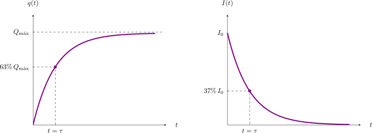

6.4 Circuitos RC#
En esta sección analizaremos los circuitos que contienen tanto resistencias como condensadores, conocidos como circuitos RC. A diferencia de los circuitos puramente resistivos donde las corrientes alcanzan un estado estacionario instantáneamente, en los circuitos RC la corriente y la carga varían con el tiempo durante los procesos de carga y descarga.
Carga de un Condensador#
Consideremos el circuito de la figura adjunta, compuesto por una fuente de voltaje \(V_0\), una resistencia \(R\), un condensador \(C\) y un interruptor \(S\).
{kind=link}
Asumiremos que inicialmente el condensador está descargado. En el instante \(t=0\), se cierra el interruptor \(S\).
Para un tiempo \(t>0\), aplicamos la regla de mallas de Kirchhoff, lo que nos entrega la siguiente relación de voltajes:
Dado que la corriente eléctrica \(I\) corresponde a la tasa de variación temporal de la carga en el condensador (\(I = \frac{dq}{dt}\)), podemos reescribir la expresión como una ecuación diferencial lineal de primer orden:
Resolviendo esta ecuación diferencial e integrando con la condición inicial de carga nula en \(t=0\), obtenemos la función de carga en el tiempo:
Derivando esta expresión respecto al tiempo, encontramos el comportamiento de la corriente:
El término \(\tau = RC\) define la constante de tiempo del circuito. En \(t = \tau\), la corriente ha decaído a aproximadamente el \(37\%\) de su valor inicial \(I_0\).
A continuación se presentan los gráficos de la carga del condensador y de la corriente en función del tiempo.
{kind=link}

Resolución de la ecuación diferencial#
Para obtener la expresión de la carga \(q(t)\), resolvemos la ecuación diferencial de primer orden por el método de separación de variables:
1. Reordenamiento de la ecuación: Partimos de la ley de mallas de Kirchhoff:
Aislamos el término que contiene la derivada:
Combinamos los términos del lado derecho en una sola fracción para facilitar la separación:
2. Separación de variables: Agrupamos todos los términos con \(q\) en el lado izquierdo y los términos con \(t\) en el derecho:
3. Integración con condiciones iniciales: Integramos ambos lados aplicando la condición inicial de que el condensador está descargado en el instante inicial (\(q=0\) en \(t=0\)):
4. Cálculo de las integrales: Al resolver la integral del lado izquierdo (usando la sustitución \(u = CV_0 - q\)), obtenemos un logaritmo natural negativo:
Evaluamos los límites:
Aplicamos propiedades de los logaritmos (\(\ln A - \ln B = \ln \frac{A}{B}\)) y movemos el signo negativo:
5. Despeje de la carga \(q(t)\): Aplicamos la función exponencial en ambos lados para eliminar el logaritmo:
Multiplicamos por \(CV_0\):
Finalmente, despejamos \(q(t)\) y factorizamos el término común \(CV_0\):
Esta expresión describe cómo la carga en el condensador aumenta de forma asintótica hasta alcanzar su valor máximo \(Q_{\text{máx}} = V_0 C\).
Descarga de un Condensador#
Analicemos ahora el proceso inverso. Asumimos que el condensador posee una carga inicial \(Q_0 = V_0 C\) y, en \(t>0\), cerramos el circuito permitiendo que se descargue a través de la resistencia \(R\).
{kind=link}
La nueva ecuación de malla prescinde de la fuente electromotriz:
Al integrar esta ecuación desde la carga inicial \(Q_0\), la carga remanente en el condensador decae exponencialmente:
Por consiguiente, la corriente de descarga resulta ser:
Show code cell source
from IPython.display import display, HTML
simulacion_rc_tiempo_html = r"""
<div style="border: 1px solid #e0e0e0; padding: 20px; border-radius: 8px; background-color: #f8f9fa; font-family: -apple-system, BlinkMacSystemFont, 'Segoe UI', Roboto, Arial, sans-serif;">
<h3 style="margin-top:0; color: #2c3e50;">Dinámica del Circuito RC en Tiempo Real</h3>
<p style="font-size: 0.95em; color: #555; margin-bottom: 15px;">Conmuta el interruptor para cargar o descargar el condensador. Ajusta la velocidad de simulación si el proceso es muy lento.</p>
<div style="display: flex; gap: 20px; flex-wrap: wrap; margin-bottom: 20px;">
<div style="flex: 1; min-width: 280px; max-width: 350px;">
<div style="margin-bottom: 8px;">
<label style="font-weight: 600; display: inline-block; width: 150px;">Voltaje (V): <span id="rc_valV_v8" style="font-weight: normal;">10</span> V</label>
<input type="range" id="rc_V_v8" min="5" max="15" step="1" value="10" style="width: 40%; vertical-align: middle;">
</div>
<div style="margin-bottom: 8px;">
<label style="font-weight: 600; display: inline-block; width: 150px;">Resistencia (R): <span id="rc_valR_v8" style="font-weight: normal;">100</span> kΩ</label>
<input type="range" id="rc_R_v8" min="10" max="200" step="10" value="100" style="width: 40%; vertical-align: middle;">
</div>
<div style="margin-bottom: 8px;">
<label style="font-weight: 600; display: inline-block; width: 150px;">Capacitor (C): <span id="rc_valC_v8" style="font-weight: normal;">470</span> μF</label>
<input type="range" id="rc_C_v8" min="300" max="600" step="10" value="470" style="width: 40%; vertical-align: middle;">
</div>
<div style="margin-bottom: 8px;">
<label style="font-weight: 600; display: inline-block; width: 150px;">Velocidad Tiempo: <span id="rc_valSpeed_v8" style="color: #d63384; font-weight: bold;">1</span>x</label>
<input type="range" id="rc_Speed_v8" min="1" max="5" step="1" value="1" style="width: 40%; vertical-align: middle;">
</div>
<div style="margin-top: 15px; display: flex; gap: 10px;">
<button id="rc_btnCharge_v8" style="flex: 1; padding: 8px; background-color: #dc3545; color: white; border: none; border-radius: 4px; cursor: pointer; font-weight: bold;">[A] Cargar</button>
<button id="rc_btnDischarge_v8" style="flex: 1; padding: 8px; background-color: #0d6efd; color: white; border: none; border-radius: 4px; cursor: pointer; font-weight: bold;">[B] Descargar</button>
</div>
<div style="margin-top: 10px; text-align: center;">
<button id="rc_btnReset_v8" style="padding: 6px 12px; background-color: #6c757d; color: white; border: none; border-radius: 4px; cursor: pointer; font-size: 0.9em;">Reiniciar Simulador</button>
</div>
</div>
<div style="flex: 1; min-width: 280px; display: flex; flex-direction: column; align-items: center; justify-content: center;">
<canvas id="rc_cvs_circ_v8" width="260" height="150" style="background: #eef2f5; border: 1px solid #ccc; border-radius: 4px; margin-bottom: 10px;"></canvas>
<div style="display: flex; gap: 15px; font-size: 0.9em; background: #fff; padding: 10px 15px; border-radius: 6px; border: 1px solid #ccc; width: 100%; box-sizing: border-box; flex-wrap: wrap; justify-content: space-around;">
<div style="width: 30%;"><b>Tiempo:</b> <span id="rc_valTimeElapsed_v8" style="color: #d63384; font-weight: bold;">0.00</span> s</div>
<div style="width: 30%;"><b>τ:</b> <span id="rc_valTau_v8" style="color: #333;">0.0</span> s</div>
<div style="width: 30%;"><b>q(t):</b> <span id="rc_valQ_v8" style="color: #dc3545; font-weight: bold;">0.0</span> μC</div>
<div style="width: 30%;"><b>i(t):</b> <span id="rc_valI_v8" style="color: #198754; font-weight: bold;">0.00</span> μA</div>
<div style="width: 30%;"><b>Vc(t):</b> <span id="rc_valVc_v8" style="color: #0d6efd; font-weight: bold;">0.0</span> V</div>
</div>
</div>
</div>
<div style="width: 100%;">
<canvas id="rc_cvs_graph_v8" width="800" height="480" style="background: #fff; border: 1px solid #ccc; border-radius: 4px; width: 100%; max-width: 100%; box-shadow: inset 0 0 10px rgba(0,0,0,0.02);"></canvas>
</div>
</div>
<script>
setTimeout(function() {
const cvsCirc = document.getElementById('rc_cvs_circ_v8');
const cvsGraph = document.getElementById('rc_cvs_graph_v8');
if (!cvsCirc || !cvsGraph) return;
const ctxC = cvsCirc.getContext('2d');
const ctxG = cvsGraph.getContext('2d');
const slider_V = document.getElementById('rc_V_v8');
const slider_R = document.getElementById('rc_R_v8');
const slider_C = document.getElementById('rc_C_v8');
const slider_Speed = document.getElementById('rc_Speed_v8');
const val_Tau = document.getElementById('rc_valTau_v8');
const val_Q = document.getElementById('rc_valQ_v8');
const val_I = document.getElementById('rc_valI_v8');
const val_Vc = document.getElementById('rc_valVc_v8');
const val_Speed = document.getElementById('rc_valSpeed_v8');
const val_TimeElapsed = document.getElementById('rc_valTimeElapsed_v8');
const btnCharge = document.getElementById('rc_btnCharge_v8');
const btnDischarge = document.getElementById('rc_btnDischarge_v8');
const btnReset = document.getElementById('rc_btnReset_v8');
let V=10, R_k=100, C_u=470, Tau=0, Qmax=0, Imax=0;
let state = 0;
let globalTime = 0;
let localTime = 0;
let Q0 = 0;
let currentQ = 0;
let currentI = 0;
let currentVc = 0;
let historyData = [];
let simSpeedFactor = 1.0;
const particlesPos = [];
const particlesNeg = [];
function updateParams() {
V = parseFloat(slider_V.value);
R_k = parseFloat(slider_R.value);
C_u = parseFloat(slider_C.value);
simSpeedFactor = parseFloat(slider_Speed.value);
Tau = (R_k * 1000) * (C_u / 1000000);
Qmax = C_u * V;
Imax = (V / (R_k * 1000)) * 1000000;
document.getElementById('rc_valV_v8').innerText = V;
document.getElementById('rc_valR_v8').innerText = R_k;
document.getElementById('rc_valC_v8').innerText = C_u;
val_Speed.innerText = simSpeedFactor;
val_Tau.innerText = Tau.toFixed(1);
if (state === 0) Qmax = C_u * V;
}
function switchState(newState) {
if (state === newState) return;
state = newState;
localTime = 0;
Q0 = currentQ;
if (state === 1) {
btnCharge.style.backgroundColor = '#a71d2a';
btnDischarge.style.backgroundColor = '#0d6efd';
} else if (state === 2) {
btnCharge.style.backgroundColor = '#dc3545';
btnDischarge.style.backgroundColor = '#0a58ca';
}
}
function resetSimulation() {
state = 0;
globalTime = 0;
localTime = 0;
Q0 = 0;
currentQ = 0; currentI = 0; currentVc = 0;
historyData = [];
particlesPos.length = 0;
particlesNeg.length = 0;
btnCharge.style.backgroundColor = '#dc3545';
btnDischarge.style.backgroundColor = '#0d6efd';
updateValuesUI();
}
function updateValuesUI() {
val_Q.innerText = currentQ.toFixed(1);
val_I.innerText = currentI.toFixed(2);
val_Vc.innerText = currentVc.toFixed(2);
val_TimeElapsed.innerText = globalTime.toFixed(2);
}
function drawStaticCircuit() {
ctxC.clearRect(0, 0, cvsCirc.width, cvsCirc.height);
ctxC.strokeStyle = '#333'; ctxC.lineWidth = 2;
ctxC.lineWidth = 2; ctxC.beginPath(); ctxC.moveTo(30, 50); ctxC.lineTo(60, 50); ctxC.stroke();
ctxC.lineWidth = 5; ctxC.beginPath(); ctxC.moveTo(38, 65); ctxC.lineTo(52, 65); ctxC.stroke();
ctxC.lineWidth = 2;
ctxC.beginPath(); ctxC.moveTo(45, 50); ctxC.lineTo(45, 20); ctxC.lineTo(80, 20); ctxC.stroke();
ctxC.beginPath(); ctxC.moveTo(45, 65); ctxC.lineTo(45, 110); ctxC.lineTo(80, 110); ctxC.stroke();
ctxC.fillStyle = '#dc3545'; ctxC.beginPath(); ctxC.arc(80, 20, 4, 0, Math.PI*2); ctxC.fill();
ctxC.fillStyle = '#0d6efd'; ctxC.beginPath(); ctxC.arc(80, 110, 4, 0, Math.PI*2); ctxC.fill();
ctxC.fillStyle = '#333'; ctxC.beginPath(); ctxC.arc(110, 65, 4, 0, Math.PI*2); ctxC.fill();
ctxC.font = '12px sans-serif'; ctxC.fillStyle = '#333';
ctxC.fillText('[A]', 65, 15); ctxC.fillText('[B]', 65, 125);
ctxC.strokeStyle = '#666'; ctxC.lineWidth = 3;
if (state === 1) { ctxC.beginPath(); ctxC.moveTo(110, 65); ctxC.lineTo(80, 20); ctxC.stroke(); }
else if (state === 2) { ctxC.beginPath(); ctxC.moveTo(110, 65); ctxC.lineTo(80, 110); ctxC.stroke(); }
else { ctxC.beginPath(); ctxC.moveTo(110, 65); ctxC.lineTo(80, 65); ctxC.stroke(); }
ctxC.strokeStyle = '#333'; ctxC.lineWidth = 2;
ctxC.beginPath(); ctxC.moveTo(110, 65); ctxC.lineTo(130, 65);
ctxC.lineTo(135, 55); ctxC.lineTo(145, 75); ctxC.lineTo(155, 55);
ctxC.lineTo(165, 75); ctxC.lineTo(170, 65); ctxC.lineTo(180, 65); ctxC.stroke();
ctxC.beginPath(); ctxC.moveTo(180, 65); ctxC.lineTo(210, 65); ctxC.lineTo(210, 85); ctxC.stroke();
ctxC.beginPath(); ctxC.moveTo(195, 85); ctxC.lineTo(225, 85); ctxC.stroke();
ctxC.beginPath(); ctxC.moveTo(195, 95); ctxC.lineTo(225, 95); ctxC.stroke();
ctxC.beginPath(); ctxC.moveTo(210, 95); ctxC.lineTo(210, 110); ctxC.lineTo(45, 110); ctxC.stroke();
ctxC.font = '14px sans-serif'; ctxC.fillStyle = '#333';
ctxC.fillText('V', 15, 60); ctxC.fillText('R', 150, 45); ctxC.fillText('C', 235, 95);
}
function drawGraphs() {
ctxG.clearRect(0, 0, cvsGraph.width, cvsGraph.height);
let maxT = Math.max(Tau * 5, globalTime * 1.05);
if (maxT < 1) maxT = 1;
const pX = 60;
const pW = cvsGraph.width - pX - 30;
const pH = 110;
const gap = 35;
ctxG.font = '12px sans-serif';
const titles = ['Carga q(t)', 'Corriente i(t)', 'Voltaje Vc(t)'];
const colors = ['#dc3545', '#198754', '#0d6efd'];
for(let i=0; i<3; i++) {
let yT = 30 + i * (pH + gap);
let yB = yT + pH;
let yZ = (i === 1) ? yT + pH/2 : yB;
ctxG.fillStyle = '#fafafa';
ctxG.fillRect(pX, yT, pW, pH);
ctxG.fillStyle = colors[i];
ctxG.font = 'bold 13px sans-serif';
ctxG.fillText(titles[i], pX, yT - 8);
ctxG.font = '12px sans-serif';
ctxG.strokeStyle = '#333'; ctxG.lineWidth = 1.5;
ctxG.beginPath(); ctxG.moveTo(pX, yT); ctxG.lineTo(pX, yB); ctxG.stroke();
ctxG.beginPath(); ctxG.moveTo(pX, yZ); ctxG.lineTo(pX + pW, yZ); ctxG.stroke();
ctxG.strokeStyle = '#e0e0e0'; ctxG.lineWidth = 1;
ctxG.strokeRect(pX, yT, pW, pH);
ctxG.fillStyle = '#555';
ctxG.textAlign = 'right';
if(i===0) {
ctxG.fillText(Qmax.toFixed(0) + ' μC', pX - 8, yT + 10);
ctxG.fillText('0', pX - 8, yB);
}
if(i===1) {
ctxG.fillText(Imax.toFixed(0) + ' μA', pX - 8, yT + 10);
ctxG.fillText('0', pX - 8, yZ + 4);
ctxG.fillText('-'+Imax.toFixed(0), pX - 8, yB);
}
if(i===2) {
ctxG.fillText(V.toFixed(1) + ' V', pX - 8, yT + 10);
ctxG.fillText('0', pX - 8, yB);
}
ctxG.textAlign = 'left';
}
let yBottomGraph = 30 + 2 * (pH + gap) + pH;
ctxG.fillStyle = '#333';
ctxG.textAlign = 'center';
for(let j=0; j<=5; j++) {
let tTick = (maxT / 5) * j;
let xTick = pX + (j/5) * pW;
ctxG.strokeStyle = '#333'; ctxG.lineWidth = 1.5;
ctxG.beginPath(); ctxG.moveTo(xTick, yBottomGraph); ctxG.lineTo(xTick, yBottomGraph + 6); ctxG.stroke();
ctxG.strokeStyle = '#f0f0f0'; ctxG.lineWidth = 1;
ctxG.beginPath(); ctxG.moveTo(xTick, 30); ctxG.lineTo(xTick, yBottomGraph); ctxG.stroke();
ctxG.fillText(tTick.toFixed(1) + 's', xTick, yBottomGraph + 20);
}
ctxG.font = 'bold 12px sans-serif';
ctxG.fillText('Tiempo', pX + pW/2, yBottomGraph + 35);
ctxG.textAlign = 'left';
if (historyData.length < 2) return;
ctxG.lineWidth = 2.5;
ctxG.lineJoin = 'round';
ctxG.strokeStyle = '#dc3545';
ctxG.beginPath();
let yT0 = 30;
historyData.forEach((pt, idx) => {
let x = pX + (pt.t / maxT) * pW;
let y = (yT0 + pH) - (pt.q / Qmax) * pH;
if (idx === 0) ctxG.moveTo(x, y); else ctxG.lineTo(x, y);
});
ctxG.stroke();
ctxG.strokeStyle = '#198754';
ctxG.beginPath();
let yT1 = 30 + 1 * (pH + gap);
historyData.forEach((pt, idx) => {
let x = pX + (pt.t / maxT) * pW;
let y = (yT1 + pH/2) - (pt.i / Imax) * (pH/2);
if (idx === 0) ctxG.moveTo(x, y); else ctxG.lineTo(x, y);
});
ctxG.stroke();
ctxG.strokeStyle = '#0d6efd';
ctxG.beginPath();
let yT2 = 30 + 2 * (pH + gap);
historyData.forEach((pt, idx) => {
let x = pX + (pt.t / maxT) * pW;
let y = (yT2 + pH) - (pt.vc / V) * pH;
if (idx === 0) ctxG.moveTo(x, y); else ctxG.lineTo(x, y);
});
ctxG.stroke();
}
function calculatePhysics(dt) {
if (state === 0) return;
globalTime += dt;
localTime += dt;
if (state === 1) {
currentQ = Qmax - (Qmax - Q0) * Math.exp(-localTime / Tau);
currentI = ((Qmax - Q0) / Tau) * Math.exp(-localTime / Tau);
}
else if (state === 2) {
currentQ = Q0 * Math.exp(-localTime / Tau);
currentI = -(Q0 / Tau) * Math.exp(-localTime / Tau);
}
currentVc = currentQ / C_u;
historyData.push({ t: globalTime, q: currentQ, i: currentI, vc: currentVc });
if (historyData.length > 50000) historyData.shift();
}
function drawParticles() {
let numP = Math.floor((currentQ / Qmax) * 40);
if (numP > particlesPos.length) {
particlesPos.push({x: 198 + Math.random()*24, y: 85 - 4});
particlesNeg.push({x: 198 + Math.random()*24, y: 95 + 4});
} else if (numP < particlesPos.length) {
particlesPos.pop();
particlesNeg.pop();
}
ctxC.fillStyle = '#dc3545';
particlesPos.forEach(p => { ctxC.beginPath(); ctxC.arc(p.x, p.y, 2, 0, Math.PI*2); ctxC.fill(); });
ctxC.fillStyle = '#0d6efd';
particlesNeg.forEach(p => { ctxC.beginPath(); ctxC.arc(p.x, p.y, 2, 0, Math.PI*2); ctxC.fill(); });
}
let lastTime = 0;
function animate(timestamp) {
if (!lastTime) lastTime = timestamp;
let realDt = (timestamp - lastTime) / 1000;
lastTime = timestamp;
if (realDt > 0.1) realDt = 0.1;
let dt = realDt * simSpeedFactor;
calculatePhysics(dt);
updateValuesUI();
drawStaticCircuit();
drawParticles();
drawGraphs();
requestAnimationFrame(animate);
}
slider_V.addEventListener('input', updateParams);
slider_R.addEventListener('input', updateParams);
slider_C.addEventListener('input', updateParams);
slider_Speed.addEventListener('input', updateParams);
btnCharge.addEventListener('click', () => { lastTime = 0; switchState(1); });
btnDischarge.addEventListener('click', () => { lastTime = 0; switchState(2); });
btnReset.addEventListener('click', resetSimulation);
updateParams();
requestAnimationFrame(animate);
}, 150);
</script>
"""
display(HTML(simulacion_rc_tiempo_html))
Dinámica del Circuito RC en Tiempo Real
Conmuta el interruptor para cargar o descargar el condensador. Ajusta la velocidad de simulación si el proceso es muy lento.
Ejemplo: Circuito con ramas paralelas#
Consideremos un circuito con una fuente \(V\), un interruptor \(S\), una resistencia \(R\) en la rama principal, y un nodo \(a\) que divide la corriente hacia una rama con un condensador \(C\) y otra rama con una resistencia \(2R\).
{kind=link}
El análisis se puede dividir en tres etapas temporales críticas:
En \(t=0\) (condensador inicialmente descargado): Al cerrar \(S\), la diferencia de potencial en el condensador es cero. Esto fuerza a que la diferencia de potencial en la rama paralela (\(2R\)) también sea cero. Por lo tanto, no fluye corriente por \(2R\) (\(I_2(0) = 0\)). El condensador actúa como un cortocircuito momentáneo, y la corriente total es \(I_1(0) = I_3(0) = \frac{V}{R}\).
En \(t \to \infty\) (estado estacionario): Tras dejar pasar un tiempo muy largo, el condensador se carga completamente y bloquea el paso de corriente por su rama (\(I_3(\infty) = 0\)). El circuito se reduce a las resistencias \(R\) y \(2R\) conectadas en serie. La corriente se estabiliza en \(I_1(\infty) = I_2(\infty) = \frac{V}{3R}\), y la carga máxima acumulada en el condensador es \(q(\infty) = \frac{2}{3}CV\).
Para un tiempo finito \(t>0\): Planteando las reglas de Kirchhoff para los nodos (\(I_1 = I_2 + I_3\)) y las mallas, llegamos a la ecuación diferencial que modela el sistema de manera dinámica:
\[R \frac{dq}{dt} + \frac{3}{2}\frac{q}{C} = V\]Cuya solución nos entrega la evolución temporal de la carga:
\[q(t) = \frac{2CV}{3} \left(1 - e^{-\frac{3}{2RC}t}\right)\]La forma estándar para la carga de un condensador en función del tiempo está dada por la expresión \(q(t) = Q_{\text{máx}} \left(1 - e^{-t/\tau}\right)\), donde \(\tau\) es el tiempo característico.
Para encontrar nuestro \(\tau\), igualamos el argumento de la función exponencial de nuestra solución con el de la forma estándar:
\[-\frac{3}{2RC}t = -\frac{t}{\tau}\]Simplificamos el tiempo \(t\) a ambos lados y despejamos \(\tau\):
\[\tau = \frac{2RC}{3}\]A continuación se presenta el paso a paso para obtener la solución a la ecuación diferencial utilizando el método de separación de variables. Partimos de la ecuación planteada:
\[R \frac{dq}{dt} + \frac{3}{2C}q = V\]Paso 1: Reordenar la ecuación
Primero, restamos el término que contiene a la carga \(q\) a ambos lados de la igualdad:
\[R \frac{dq}{dt} = V - \frac{3q}{2C}\]Buscamos un denominador común en el lado derecho de la ecuación. Luego, dividimos todo por la resistencia \(R\) para aislar la derivada::
\[\frac{dq}{dt} = \frac{2CV - 3q}{2RC}\]Paso 2: Separación de variables
Agrupamos todos los términos dependientes de \(q\) en el lado izquierdo y los dependientes del tiempo \(t\) en el lado derecho:
\[\frac{dq}{2CV - 3q} = \frac{dt}{2RC}\]Paso 3: Integración con condiciones iniciales
Integramos a ambos lados asumiendo que el condensador parte completamente descargado; es decir, en \(t=0\), la carga es \(q(0)=0\). Para un instante de tiempo \(t\), la carga será \(q\):
\[\int_{0}^{q} \frac{dq'}{2CV - 3q'} = \int_{0}^{t} \frac{dt'}{2RC}\]La integral del lado derecho es directa. Para el lado izquierdo, utilizamos la regla de la cadena (donde el término \(-3q'\) aporta un factor de \(-1/3\) al integrar):
\[-\frac{1}{3} \ln(2CV - 3q') \Biggr|_{0}^{q} = \frac{t}{2RC}\]Evaluamos los límites de integración correspondientes y aplicamos la propiedad de la resta de logaritmos, \(\ln(a) - \ln(b) = \ln(a/b)\):
\[\ln\left(\frac{2CV - 3q}{2CV}\right) = -\frac{3t}{2RC}\]Paso 4: Despejar la función de la carga \(q(t)\)
Aplicamos la función exponencial a ambos lados de la ecuación para anular el logaritmo natural:
\[\frac{2CV - 3q}{2CV} = e^{-\frac{3}{2RC}t}\]Separamos la fracción del lado izquierdo y reordenamos los términos algebraicamente para aislar la fracción que contiene a \(q\):
\[\frac{3q}{2CV} = 1 - e^{-\frac{3}{2RC}t}\]Multiplicamos por \(\frac{2CV}{3}\) obteniendo la solución de nuestra ecuación diferencial para la evolución temporal de la carga:
\[q(t) = \frac{2CV}{3} \left(1 - e^{-\frac{3}{2RC}t}\right)\]